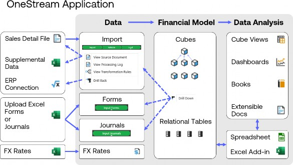
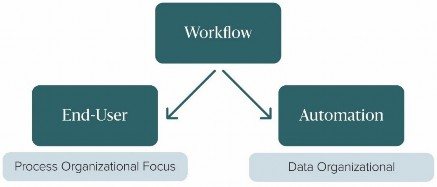
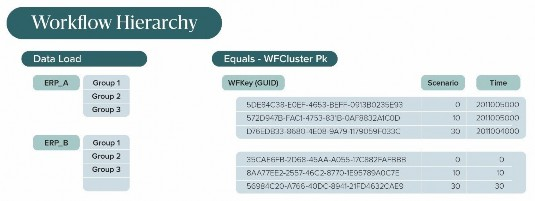
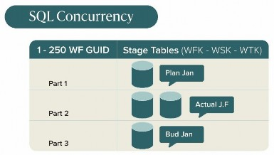
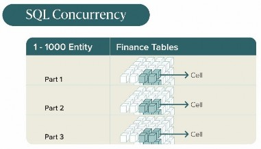
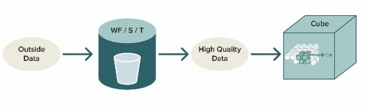
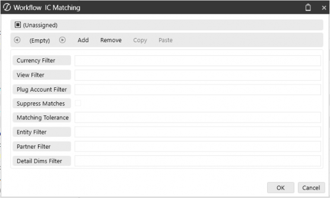
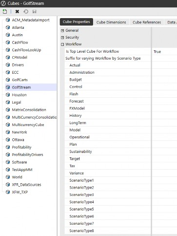

Workflow
Originally written by Todd Allen, updated by Chul Smith
Workflow
Introduction
Workflow is an extraordinarily strong orchestration engine within OneStream’s Corporate Performance Management (CPM), one that was created by the pioneers of the CPM industry.
Workflow in OneStream is a process tool that takes into account how many of our clients’ employees will need to enter data at different times, in possibly different time zones, in hundreds of locations, for all the varied business processes that make up their business. While other companies claim to have a workflow, none can compare to the power and flexibility of OneStream’s offering.
Workflow is one of the more powerful components to OneStream, and pretty much every chapter in this book has a touchpoint that is either tied to, leads with, or ends with workflow. It is the backbone of the platform.
When a user logs into the system, OneStream’s workflow guides them to make sure they complete all the steps necessary within their process. Not only does workflow guide users, but it tracks their individual progress, which can be reviewed later. Imagine if you could look back on the past year of closing and evaluate who needed more time and who closed quickly. Could you cut a day from your close? Maybe you need to move quickly to update an older general ledger system? This is valuable, actionable data.
Transparency is typically important for our clients, and we have created one system (data loading/analytic engine) that solves multiple business problems across multiple business units (extensibility). Workflow is set up based on the different tasks involved in budgeting versus those for Actuals; tasks required in forecasting versus those in planning. When developing OneStream, we knew that our software had to be flexible for these situations, especially during the loading and feeding of data, and we learned early on that one size does not fit all. Not every user is going to remember everything all the time, either. With these complexities, we needed to figure out how to protect the end-user.
This chapter will give you some history into workflow’s origin, design basics, and some key considerations to ensure a successful project.
Workflow › Introduction
Workflow Review
At some point, you will have inevitably seen a demonstration of OneStream. I am sure you will remember the picture below (Figure 7.1). Consider how data is sourced in three ways: data input, a journal, or manual data entry. Data loading is either a file, an Excel spreadsheet, or sourced from a database (e.g., general ledger).
That data feed then goes to the Stage table for transformation and mapping. These tables, journals, and forms are all fed into the cube, which is our financial model. The design of said cube is what drives reporting and performance. Then, you can report on the data using Cube Views, reports, or Excel. Each of these steps – by the end-users – is a step in your workflow! This is repeated for each site, such that Site 1 and Site 2 can work concurrently on their data.
Workflow ensures that users follow the steps needed for your process. It tracks when they complete each step successfully.

Figure 7.1
Workflow › Introduction
Workflow Evolving
The genesis of workflow was originally three concepts:
• Responsibility Hierarchy
• Transparency to process
• Strict Sign-off & Control
When we started building the concepts of workflow, we began with the most complex and strict financial process – the month-end close of Actuals. Those first passes at workflow had struggles, though, and we recognized that the typical certification process could be a bit too restrictive. Not every process was as restrictive as month-end Actual reporting. We needed better ideas, which would be more accommodating. As such, we continued to develop other solutions like Workspace.
Workspace is a completely customized workflow, to match the business process, which allowed us to loosen up restrictions and progress into large-scale, complex, planning-type projects, and custom solutions. Planning process controls vary wildly and require a much less restrictive process.
As we continued to develop our foundational concepts around workflows, we found performance and automation started to become a bigger issue to address in larger implementations. In these types of projects, all data would be loaded centrally under a single Review Workflow Profile.
Below is a diagram of the workflow inputs.

Figure 7.2
We conceptualized the workflow inputs as two sources of activities: end-user and automation. Each of these sources drives the workflow process.
Workflow › Introduction
End-User (Hierarchical/Responsibility)
End-users will be driving the workflow. The structure you build will guide these users and their approvals. The approvals are parent members of the base inputs. This forms a hierarchy.
The workflow hierarchy should align with your organization and process structure. Following this logic, data loading and certification exist in a hierarchical manner. Someone submits the data, someone above them reviews it, and so on. Dependencies are all inherent to the Workflow Profile hierarchy, and the workflow can ultimately roll up to the corporate headquarters. The structure of the hierarchy is pleasing to the eye but can be challenging from the administrator’s perspective because there could potentially be so many review points. Plus, you may end up adding additional profiles that do not really add any value outside of the visual structure.
Workflow › Introduction
Automation (Lights Out, a Popular Choice)
We suggest prototyping an automated workflow early, and first running things manually to iron out all the wrinkles. You will also need to plan for kickouts or mapping issues. With an end-user, someone is watching the load, but with an automated feed, no one is checking as it is loading. It could be running overnight! You need to consider where and how you store data loading errors so the process can continue, but also have a process for the customer to perform analysis on items the next business day. Once this runs like a well-oiled machine, then you can go to a completely automated model.
This option is exceptionally clean. You can have a review profile with your data loading items from source systems. Examples are a single ERP data load, or siblings of ERPs, or centralized loading. This is quite easy and simple to configure.
When creating automatic feeds, be sure to plan them out with room to grow, and make sure you consider future acquisitions. You can stub out a section for future reference and should also consider loading your data through connectors in a lights-out fashion. All of this can be accommodated through a combination of workflow, data management, connector business rule(s), and data integration.
Please note that a lights-out process in OneStream is not a secret black box. It still uses the same mechanics as a manual process, including all the auditability. All the drilldown and functionality will be there, too.
Workflow › Introduction
Or Hybrid of the Above
Like most solutions, the best answer to many a problem is not one or the other, but a mix of both. With respect to performance and data structures, this is the next evolution. Larger applications require more data, and hence there is a hunger for more performance and the desire for lights out processing. For this, we need to design the data import accordingly. With automation, we may need to load a single ERP, which can be massive through a single import. This could be run overnight or done during off-hours, but if the process needs to be timely, we need to look at how best to break this up.
The cost of calculations is in the reprocessing. If transformations (mappings) change, we have to run against the whole dataset, and that means reloading everything. Remember, we are loading a dataset and creating the links to drill back to the source data… either to the Stage table or to source data.
Workflow
Data Volumes and Performance
Workflow › Data Volumes and Performance
Loading to the Stage
Good design is critical to good performance. For a good design, we need to understand the mechanics of workflow, and how we translate data to disk. We also need to think about data structure and automation. The two most important ways we can impact performance are through parallel processing and partitioning. Parallel processing is the primary way to improve the performance of data loading and to get the data into the analytic model. In a nutshell, it means concurrent loads of data happening at the same time. Partitioning is how we break up the data file coming in.
We want to keep the partitioning to manageable groups. Ultimately, the amount of performance and throughput you can apply to a workflow process comes down to the efficiency of the data structures. We do not want to overload the application server with too much data being sent to the database. We have hardware limitations that restrict how much data can move in a timely fashion. This could cause system conflicts and backups, and will make a bad situation worse. If we understand how the data is stored on the disk, however, we can maximize concurrency in these large batch processes through parallel processing.
We are often dealing with large files (several million records). For this, let us consider large as 1 million rows. Can we process a million-row file? Of course! But what if we need to reprocess (remap) or perform this on a more regular basis? That million could be tens of millions or more as it is loaded multiple times.
We should study that 1 million row file and see how we can parse the file for efficiency. Parsing means breaking it up into multiple files. What if we could break it into four files? Now, we can process four 250k files in parallel. And if we must reprocess, it will take a quarter of the time. This is where understanding data structures will give you the insight needed for the most performant workflows.
If we chose months to break up the rows, we would have no more than 12. If we chose entity, we could have as many as we have entities (hundreds or more). We could group the entities, too.
Therefore, we should never partition by months (period). One million divided by 12 will create larger groups than one million divided by 100 entities. So, each group runs faster, and more can run at the same time – or in parallel. Finally, if we have a change, we can load that entity (or entity group) without having to load everything.
The OneStream partition is created using an algorithm that breaks up the GUID (identification field as a 16-byte integer) to look at the first 4 bytes. This breaks up the single bucket of data and spreads it to the 250 tables in SQL. The OneStream application does this automatically.
Workflow › Data Volumes and Performance
Workflow Clusters
We will want to create a workflow hierarchy which then puts data into a workflow cluster.
A workflow cluster primary key (PK) aligns to a data storage index when using business rules (specifically the BRAPI); we always refer to the workflow PK cluster.
The following is an example from the GolfStream application (The OneStream reference application):
• Workflow GUID (Houston)
• Scenario Id (Actual)
• Time Id (2020M1)
All this data will be co-located together. So, how do we know how it is stored in the SQL database? If we look at SQL Server, we see just one table, but SQL Server sees 250 tables. It uses the workflow cluster PK GUID and takes the first four bytes as direction as to where it needs to go into the 250 tables, based on an algorithm we have built in our system. We did this so we do not fight and compete against each other. We may be loading 1,000 entities across all these structures at the same time, and if all the data went into a single partition there could be locking opportunities. If one user is loading while another user is loading or deleting, there could be conflict with each other, which causes locking, too. So why is partitioning so important in the staging area? Clustered index!
| Note: Each time we create a new workflow, the system automatically creates a GUID for that workflow. Our Stage tables all use the same partitioning and data structures. |
Let us go back to that original diagram (Figure 7.1). When a workflow is created for data loads, it is configured to receive data from the outside world, but we do not know if we’re receiving valid accounts, entities, etc. We do not even have a primary key, and we still haven’t mapped anything yet. We simply need to ingest the unknown data.
Then, we need to clean the data and distill it down to something that is good enough to send over to the analytic engine. We only know two dimensions – Scenario and Time – but with them, we now know we can put that bucket of data into the clustered index. It could be ten rows; it could be 1 million rows. We do not know much more than that. So, let us think about the difference between the analytic cube and data loading processing. Let’s explain the contrasts below.
We break this up by two important concepts:
• Bucket – Stage engine data loading
• Cell – Analytic engine – distinct cell by a primary key
Work in the Stage area is done by bucket. Buckets are dealt with in their entirety and cannot be broken down like cells; therefore, we do not want to create a bucket that is too big. If there is one problem, then the whole bucket must be emptied and refilled. If we can break this up by multiple buckets, it is more efficient.
Buckets can be broken up by workflow, scenario, and time, all of which are the WF cluster index. Buckets reside inside a partition. I could be loading Plan and Actuals at the same time, within the same partition, and this is more efficient because I can work with large loads of data, and SQL can manage accordingly.
Let’s take a moment to define what paging means for a computer operating system. In computer operating systems, paging is a memory management scheme by which a computer stores and retrieves data from secondary storage or use in main memory. In this scheme, the operating system retrieves data from secondary storage in same-sized blocks called pages. Paging is an important part of virtual memory implementations in modern operating systems, using secondary storage to let programs exceed the size of available physical memory.
In the following diagram, the data records (individual lines of the file) are moved to the tables in SQL databases, as shown by the database icon. Within each of the SQL databases, you can identify a single cell of data by scenario.


Turns buckets of data into cells…

Figure 7.3
Buckets function at the page level. The page is by scenario and by entity. The cell concept, by comparison, is quite different – each cell is one single number or record. When I update a cell in something like Excel, I am updating that single cell, as opposed to a set of data, which is more like a bucket. That bucket will update all records.
As the data loading process continues, I perform my mapping and I am now ready to send data back to the SQL Server. We grab the GUID, the Scenario ID (Actual), and Time ID (2020M1) – and with these three pieces and rows of data, the data moves to SQL. There is a function we have written inside SQL Server to read the first 4 bytes (as mentioned) and figure out how this equates to an integer between 0 and 250. This balances very well across the 250 partitions. You do not have to think about it; it’s all done by OneStream.
If you’re curious about your application’s partitions, there’s a report called Stage Data Partition Statistics found under the Application Analysis report group within the Standard Application Reports solution (which can be downloaded from the Solution Exchange).
This report will show how many workflows are in the system and if any of them share the same partition. (You will want to monitor if any of the workflows are overlapping.) Partitioning is all about isolating buckets! Why? If you go back in time, remember it was Site 1 loading, Site 2 loading, etc. By default, it broke up the buckets into their own partitions.
If we need to break up a bucket, how do we do that? Easy, the answer is always by entity. You look at the existing dataset. If we have a smaller 500k row file, this really should be no problem, but a planning load could be 12 million rows, so this may need some attention. 122 million records will cause issues for the connection to SQL to process things quickly. The Stage partition is configured into buckets (1 to 250 tables). The analytic engine is by cell. 1 to 1000 (each year has 1k tables).
Workflow › Data Volumes and Performance
Loading from the Stage to the Cube
Now that we have loaded the data into the Stage, and transformed it, it’s time to load the cube. We now turn the buckets within the Stage into cells within the cube.
We need to map to the cube that will break up the data by Data Unit, so we start with the entity. The cube says okay, I see the bucket; how many entities do you have? I see you have 10 entities… I will go ahead and load those in parallel. This way, I can get super-high throughput. This is how the data structures are aligned.
What did we learn? Always partition by entity. There is an inherent relationship between workflow and entity, which aligns all the way through the data structures. Then, we always recommend loading time in sequential order. Start with January, then February, and so on.
In the example below, we start with the outside data and trace its movement to the cube.

Figure 7.4
In the above diagram, you will see how this flow of data comes together.
• Stage engine – Outside data is fed to the Stage engine. This is loaded by clustered index, always updates the whole bucket, deletes the whole bucket, etc.
• Analytic engine – Focused by a primary key.
• Load cube – Breaks out the buckets of data into cells of data.
Remember, the database is designed to meet reporting requirements, and we need to make sure the data gets there as efficiently as possible.
There is not always a single design metric for a well-performing workflow, but around one million rows per location is efficient. If larger than that, additional analysis should be performed, and this is where you can apply the concepts from above.
Workflow › Data Volumes and Performance
End-User Use Case
With one client, we needed to replace an existing consolidation tool, so we were gathering requirements, and one of the first topics of discussion was workflow. The process when designing workflow is to define who does what tasks, when they do it, and how they will be processed.
The design started by finalizing the financial model, including the metadata structures, and we were soon ready to talk about data loading processes. We spent more time on data gathering and reviewing design than traditional implementations because we had to make sure we captured all the real-world situations in the newly completed workflow section of OneStream. This client was a Tier 1 automotive supplier with hundreds of locations all over the globe and with a roadmap of acquisitions that needed to be considered as part of the design.
This is a great use case for working through the workflow thought process. So, where did we start? Having the financial model defined was important. The discussion then turned to moving the data from the source to the reporting definition. We needed to be flexible, as we all knew there would always be some last-minute changes, but the core design needed to be in place, so we had a consistent process to the target cube.
When we designed the cube, we took the time to understand our end-user audience. Who does what, and why are they doing it? What are the review levels? What is the process? These questions may seem overwhelming to answer, but it’s a perfect time to review the process and potentially weed out any bad habits. From here, we broke the audience up into groups.
The first group was the data loaders who were involved in loading data, the type of data loaded, and the frequency of the loads. This included single sites that loaded a single file, as well as shared service centers that loaded many entities.
I mentioned that the financial model needs to be in place; well, that also means the entity structure. This plays a critical role in the workflow design. Not that the workflow design must match the financial entity structure; it is just that we must understand the entities that we need to load to. Each entity needs to be accounted for in our workflow design.
Our initial whiteboards started off by breaking the groups up by region. Based on the regions, we defined the data loaders and reviewers. A driving factor for this was that we wanted to keep the data loading responsible to an individual. Multiple folks loading to the same entity could be problematic without proper coordination. The entity is a key to the loading process in terms of merging and replacing data. Take the time to understand who is loading to that entity and that there isn’t any cross-loading. We took the approach of having a single owner (with a proxy as a backup) as a driving factor. This made the design very straightforward. This approach of having a single entity by location or user source is critical to avoid users overwriting each other’s data as they load. The last user to update the database would have only their changes in the system.
This approach also helps with the security design. Each entity will be given a security group, and that group can be used for the workflow. This is a very simple approach. The user has access to an entity in reporting and data loading, all from the same security group. Sometimes, a shared service center may decide to break out into their own consolidated group, which adds to these security classes.
You’ll want to review the size and frequency of your files. For example, in the shared service scenario, you could have a rather large file that was being loaded many times during the first couple of days of the close. They would be reloading the whole bucket of data unless the file is broken out. Do we keep it as one large file, or do we take the time to break it up? If we break it up, there will be more integration mechanics that we’ll need to build/configure – different transformation rules, etc. From our testing, this would save time, but it wouldn’t be enough for long-term maintenance.
This client wanted one data source and one transformation set of rules. Our decision was to keep the large data file load as it was. The alternative would have been a more granular workflow structure. The shared service section also had a different set of reviewers as shared service only mapped and loaded the data; if there were any mapping issues, they would address them, but all the validations were performed by local controllers.
Workflow › Data Volumes and Performance › End-User Use Case
Initial Workflow
After numerous whiteboarding sessions, we were at a point where we could stub out an initial workflow. As mentioned in the opening chapter, it was time to build out what we heard. In our case, we built out one of each of the groups and did a roadshow. We did this for two reasons. The first was to make sure we were able to translate what we captured during our requirements into a usable flow for them. Secondly, the roadshow was an early form of training. Looking back, user acceptance training was pretty much seamless, and we attribute some of that to the early roadshows.
To complete the data loading, we had to address historical data for which we created a dedicated location. Typically, people call it ‘admin’ or ‘history’ and allow access to it by administrators only. Since we were defining what entities would be assigned to their respective workflows, we turned to the ability to load unrelated entities on for the historical loads. This allowed us to load to all entities. One mistake people often make here is allowing the historical data and current end-user data to load to the same time periods. You do not want to do that. When data is loaded, it is often done as ‘replace’. This, again, creates a situation where people are loading data and overwriting each other’s submissions. In this case of loading historical data, we would recommend having two separate workflow locations to load to the same entities. One for end-users going forward, and the aforementioned one for administrators for history. Since each group does not have an overlapping time period, this should avoid overwriting each other’s data. If they do load to the same periods, you will need to add workflow channels to your design.
Once we configured the data source and transformation rules, we were able to successfully populate our new application. In our example, there were 11 or 12 years of historical data.
Workflow › Data Volumes and Performance › End-User Use Case
Up and Running
Now, we had a working application. Once the data was loaded, we began to test things like rules and the speed of reports. We were able to see if account settings like Type were issued correctly. Having a dataset that is representative of the Actual data used is critical. The sooner this is loaded, the better, for you are able to identify issues sooner.
With the workflow structure in place, it was time to understand what type of data the users were going to load. We broke that section up by file loading (import child), data entry (forms child), and journals (adjustment child). Each location would originally have the ability for all three areas to be loaded. As this was early in the design, we were also thinking about how we were going to create our generic workflow templates. Knowing we had many sites, the workflow templates were going to save us time during the build phase. The templates let you define all the settings once, then apply them to new workflow locations many times. It is faster than checking each box for each location.
For the file loading, we needed to understand the types of files, sizes of the files, any direct connectors, MTD or YTD, supplemental data, headcount data, etc. Only direct data loading and a generic journal were chosen. The source system would need to make the update, and trial balances would be reloaded. We were big fans of that decision. We now had a workflow structure, rough security shell, and had figured out all the different source systems feeding OneStream. In parallel to the workflow design, we worked on the data sources and transformation rules. These items linked into the workflow configuration.
The one item that was incredibly labor-intensive was the transformation rules section. As part of the processing steps in OneStream, we have a validate step (using the transformation rules) to ensure every piece of information is mapped accordingly.
| Note: Do not underestimate the time it will take to validate your mapping rules. For more information on data integration, please refer to Chapter 6. People often ask if consultants can help with this part of the process, but you want the end-users to do this work as it will help them understand the mapping later. |
As part of workflow, we can define what type of scenario you want the end-user to load to. (Actual, Budget, etc.) In a consolidation project, you load to Actual, but in our case, we took a slightly different approach. We loaded to a scenario we had created called Actual_Test. In the background, meanwhile, the admins were loading the present production data to Actual. This way – during our parallels – we could validate that the two matched. (Back to the point, earlier, of vetting out your transformation rules.) During the parallels, we had Cube Views to compare the differences (to make matters more seamless for the end-users). You may find you could use a temporary scenario for holding data, too.
Intercompany was another prerequisite that needed to be configured in the financial metadata model before we could configure it in OneStream’s workflow. Intercompany elimination is the process of canceling out account balances for intercompany partners for intercompany accounts (receivable/payable), with any unresolved balance being placed in a plug account.
Intercompany eliminations occur once the values roll up to a common parent. All this exchange can happen within the respective parties visually in workflow. Once the data has been loaded, the parties can see what their differences are, and even exchange communication through the product. There are also intercompany reports that come with a standard install. For all the intercompany configuration details (Figure 7.5), refer to our Design and Reference guide. This is also important to configure in your workflow templates, as there are a few steps in setting this up.

Figure 7.5
Back to our example, where – as we continue our journey through the workflow design – it was time to understand what type of calculations we needed to perform on the newly-imported data. The goal was to define each body of the workflow and ensure they did not overlap with each other. Another reason we perform calculations is that – in the event you do move forward with confirmation rules – the data will need to be calculated/consolidated to have accurate rules. This is a critical item to understand, as you don’t want your audience constantly stepping over each other and impacting your hardware with inefficient consolidations.
Every workflow design, including Workspace-type designs, needs to thoroughly review the consolidation/calculation paths. In our case, we limited who had consolidation authority. Only administrators and specified super-users had access to perform the final consolidations. All others had the ability to calculate their respective datasets. Here is another advantage to OneStream’s workflow – you calculate your datasets as you roll to the top and have the administrator carry out (or automate) a data management job to perform the final consolidations. Without putting in guidelines/restrictions, folks would have been stepping over each other.
Another requirement, as part of the workflow design, was to reproduce validation checks (about 15 of them) that corporate performed (based on the respective sites’ data that was loaded). We call them confirmation rules, and they have their own section in workflow. They allow administrators to build out different validation checks to confirm pretty much anything they want before signing off on the data. They can be as simple as checking that a trial balance balances. These validations can create a warning or stop the process, depending upon the severity you choose. We chose to have a standard set of validations that everyone would perform. This included ones that would stop the process. (Saving corporate tons of hours.)
As part of our UAT, we discovered that certain corporate accounts needed the ability to adjust once it was ‘pencils down’ for the sites. A function called central input was created. This central input allows data to be loaded for all entities from just one person, like you may see for a shared service center. In our case, we created forms for the adjustments. As a designer, you’ll want to ask questions surrounding what type of data will need to be adjusted. OneStream can accommodate central loading for forms or journal adjustments.
OneStream also provides complete transparency to both the owner of the entity (workflow) and to the corporate adjuster. The owner of the location being loaded to will see another workflow child with a gray checkmark. That workflow child can be clicked on to see what user/date/time the adjustment was made. When using central input, you need to have channels configured. This will prevent people from overwriting each other’s data. For additional details, and how to configure this, please refer to OneStream Navigator.
Now that we had the data loading processes in good working order, next up was to tackle the reviewer process. This was the next step in the process hierarchy. We looked at this across two different paths – controller and finance director review. The single-site locations were very easy as we had created reviewers for their regions, and they aligned nicely with data loading sites. The challenge was more on the shared service side. For the shared service loaded entities, we created separate review Workflow Profiles and came up with something we called named dependents.
The product gives us the flexibility to assign folks to review entities that they didn’t directly load on (which, in some cases, covered mixed entities). For example, if the entities were mixed over multiple data loading sites, the data loaders would see this dependency of each of them in their workflow view.
Another way to look at this is as follows. Let us say Site A has Entity 1, 2, and 3, and Site B has Entity 4, 5, and 6. One of the reviewers is responsible for Entity 1, 2, and 6. Named dependents gave us the functionality to solve that requirement across sites.
The last step for the reviewers was the ability to certify. As we rolled this out, we defined a list of questions that soon became very cumbersome and ultimately turned into our one-click quick certification option.
With the data being successfully loaded, and the parallels complete, it was time to move on to the next phase: budget and then forecast. We got the whiteboard back out and reviewed the process through the budget and forecast lens. We quickly discovered it had a different audience with different timing. This was a challenge. We already had the entity assigned to specific workflows along with the appropriate security. We had also made the decision to have only one primary person responsible for that site, which meant one cube root. To further complicate things, we would have a different audience than the shared service loading audience. Adding a suffix (FST for forecast, for example) for workflow – by varying Type – gave us the functionality and flexibility to break out our new group into their own workflows. Furthermore, it gave us the ability to open forms for their data updates.
This is a key part of any design considerations – what are the pros and cons of breaking out workflows based on Scenario Type? As stated throughout, make sure you understand the landscape of your data, and where its final resting place will be. For example, if I’m an Actual person, do I ever need to see Budget and Forecast? This is where we can break up the process by Scenario Type. Note that each Scenario Type can take on its own look and feel. For example, under the Budget Scenario, Actual person(s) may only see a full-year time period, with forms, dashboards, or even Workspaces. Access to these Scenarios can also be managed through security.
Be aware of the volume of workflows, as you do not want to add any unnecessary overhead. As we progressed through the final phase of the project, we created 600+ workflows.
Workflow › Data Volumes and Performance
Workflow Items for Planning Type Projects
Typically, a consolidation project will have a more defined data loading structure than a planning-type implementation. For the consolidation, you’ll want to define an owner and proxy, as this will be the best way to control who does what and when. For planning-type projects, you may want to consider something we call a Workspace. This can literally be a blank canvas. If you’re not interested in the standard workflow setup, you can set up the home page as a Workspace and have folks land here.
• A Workspace is a dashboard that can be used to complete workflow processes or be a user’s home screen.
• Workspaces are commonly used with some of our Solution Exchange Solutions, such as: People Planning, OneStream Financial Close, Task Manager, or Actor Workspaces.
• All the dashboard’s components provide the behaviors and actions necessary to successfully complete this part of the workflow.
Please refer to Planning, in Chapter 5 of this book, for additional details.
Workflow › Data Volumes and Performance
Periods
Another thing to consider during the build of the workflow is when each period will be completed. Will the end-user do all periods at once, or will they be done month by month? Will they do periods randomly during the year? You must determine the periods to be completed and ensure the configuration will accommodate the process.
Workflow › Data Volumes and Performance
Structure
As nice as it looked on paper, our initial structure for the automotive parts organization was too rigid. Rigid from the perspective that it was not overly forgiving from a certify/locking viewpoint.
Many folks had performed their data loading, validations, and even answered their certify questions, but were reluctant to click the final certify. The reason for that was it would automatically lock the workflow. If they had to make any last-minute changes, they would have to ask the administrators to unlock them. When it was the last day of data loading, the administrators would go through and lock workflows because many of them were still open. I know this does not sound like a problem, but the locking needed to be performed in a surgical way. This meant that just the data loading would be locked while reviewers stayed open.
After a couple of closes, we flattened the list to make the locking process cleaner and smoother by simply taking out the unnecessary hierarchy steps. They were there for structure only and really did not add any value.
The next item I cannot emphasize enough – consolidations! As you map your workflows, make sure you do the same with your calculation definitions. This is another important step in the overall design to ensure data is being consolidated/calculated at the appropriate time. We cover some of the benefits later in this chapter. Ultimately, you will be creating an administrator dashboard or Cube View for user communities to manage all consolidations moving forward. As part of your design, make sure you do not have them stepping all over themselves.
Scenario Types map out the big picture. We strongly suggest you map out your Scenario Types and even build what you can as best you can. Understanding what data goes where is a critical step to define in the beginning. By building what you can, you will make changes easier later.
Workflow › Data Volumes and Performance
Naming Conventions
As part of any strategy, you need to define your data loaders and the reviewers. Even if you are limited, and are loading from a single ERP, make sure to have a common naming convention that can readily expand as you grow. Consider new acquisitions, retired sites, etc. These naming conventions also play a major role in your security model. Any future reporting, or even simple searches in your grids, can be narrowed down by meaningful suffixes or prefixes.
Another key consideration to highlight (we did not need this during our first project, but it is something you should be familiar with) is workflow channels. Here is another workflow design decision. These alternate workflow channels can be attached to non-trial balance accounts and applicable workflows so that these items can be locked at an earlier or later time than trial balance-related workflows. Do I need to incorporate workflow channels to facilitate data locking at a more granular level? If yes, do I want to do it by account and User Defined? Or do I want to perform this by UD? You will want to review this upfront as – most of the time – it’s an afterthought. Why now? Because if you are using a UD for these, that dimension cannot be assigned by cube, Scenario Type, etc. In other words, that UD is the only one that can be used for workflow channels for the entire application.
Workflow
Workflow Design
Our example use case was an amazing journey as we developed, configured, and learned how best to apply workflow to an exceptionally large organization. We defined who did what, when, and how, from end to end.
We learned a ton during that first implementation, which filtered through into creating an incredibly robust portion of the OneStream tool. Everything starts with a plan, but as you learn along the way, you adjust.
You need to start with your end-users. Understand the entire process they will go through and incorporate that as the basic workflow. You then need to provide the reports and forms that will support those tasks. Add process steps to trigger calculations/consolidations. Add confirmation and certify checks. Add training support. You want the end-users to own this process of loading data. By pushing the work to the field, all data loading can be performed by the field sites, and they can address any validation issues locally as they are closer to their datasets. Once the data has been cleansed and successfully loaded, we can have the appropriate folks review and certify the data.
Finally, it’s important to understand – as a project team – the overall flow of the calculations and consolidations that are triggered throughout this process. This way, everyone can clearly understand the status of their data and who can see what during each step.
More broadly, creative solutions are great, but consider how you document them and how they can be easily supported by the local administrator’s group. While on that subject, it’s good to define a local COE (center of excellence) at your customer base. A center of excellence is a group or single admin who can centrally support the solution. This also includes your super-users, who will help teach the community the benefits of OneStream and how they work.
Of course, administrators will have full access to the system, but you will also be building out a section just for these same individuals. Items such as access to consolidation grids, shortcuts to FX rates, WF status reports, etc. Basically, do not lose sight of administrators.
To make the full workflow experience best for your end-users, you could have a combination of OnePlace, defined workflows, or even a Workspace home page.
| Note: Unless you have a defined home page, everyone will navigate through OnePlace. |
One option to consider when designing your workflow is to consider the combination and order of the process steps. For example:
• Data loading, validations, and certify = workflow
• Data consumption & review = OnePlace using Cube Views & dashboards, or a home Workspace, or guided reporting, or Task Manager
We covered a lot in our project example. Discussing each of these steps and the related options will be confusing, especially to a client who is seeing the flexibility for the first time. I would again recommend building a prototype to walk them through the design. For discussion purposes, I would list out the steps as follows:
• Document review process to build hierarchy
• Identify all data sources
• Create admin location for historical
• Determine the parsing of the data for end-user data
• Determine the number of load formats and mapping rules required
• Breaks load up by input, forms, and adjustments
• Do you need central inputs? Then configure channels
• For each location:
Determine the calculations needed for each step
Consider which and how calculations (in addition to consolidations) may need to be triggered
Reports needed
Training needed
Confirmation rules
Certification rules
• Configure locking and certification of data
Workflow › Workflow Design
Automation Use Case
Let’s look at another client example – a large retail company with a file size of about 6 million rows. At that level, we made a design decision to break this up by entity. We broke out some of the larger entities into their own workflows, and grouped the smaller ones to their own workflows. You can apply this same concept on different ERPs; break out the systems into their own locations.
From here, we automated the data loads into batches. This allowed us to load multiple locations at once. In this case, we were able to use the parallel API batch loading.
Here is an example of the rule:
BRApi.Utilities.ExecuteFileHarvestBatchParallel(si, fixedScenario, systemTime, valTransform, valIntersect, loadCube, processCube, confirm, autoCertify, ParallelCount)
We used a level of eight parallel processes in this case. (Please note there is an art, not a science, with parallel processing.) Tons of testing was performed for us to settle on eight. We started low, at four, and continued up until we saw the servers being overwhelmed. Pay particular attention to the database server. This has been mentioned before; you should always be testing and validating all your assumptions. Prototyping is a great way to validate.
Workflow › Workflow Design
Data Loading and Considerations for Partitioning
In another example, a client was loading data by month for a large dataset. The dataset was about 8 million records. The IT group pushed back on grouping the load by entity; they said it was not possible. Since we were seeding data for the forecast, it would be easy to load a single file for a given month to an ‘admin’ location. This could be run overnight, so performance would not be too bad. When we added a new scenario, we were loading different months at the same time.
Effectively, the file was being portioned by period. Since we were loading data to the same entities – just for different periods – we created an issue where the system could overwrite data in the wrong periods, going against the core methodology of accounting standards. Period 1, then Period 2, etc., in sequential order.
Moreover, this was a bad design. We went back and created a load file by entity group. Not only were we able to resolve the data loading problem, but we also had a more scalable design. Firstly, if there was a change, we were able to load a subset of the entities instead of all of them. (This is much faster.) Secondly, since we grouped by entity, we were able to have a greater number of smaller partitions, which allowed us to utilize more threads on the load. This allowed us to successfully load the file.
Workflow › Workflow Design
Workflow Items for Analytic Blend
All of the conversation so far has been focused on our OneStream Stage engine and the data quality engine, which then feeds the finance engine.
There is another engine that hasn’t been covered yet, however, called the blend engine. You may have heard the term Analytic Blend within the community. From a workflow perspective, we should touch on a few points. Workflow is a conduit to Analytic Blend processing, using the same features as data sources and transformation rules. In this case, you’re just loading, using the blend engine and not the Stage engine. So, from a configuration perspective, you are configuring for Analytic Blend.
For a complete description and detailed overview of this functionality, please refer to the Analytic Blend Chapter (13) of this book.
Workflow › Workflow Design
Tips and Tricks
It is all about sharing. This section is more of a reference to help prevent some of those future ‘gotchas’ that you may encounter. Here is a list of some of the more common ones for your reading pleasure.
• You should understand the relationship workflow has with the analytic data cube. The Origin dimension plays a key role between the two engines. The input children are mapped directly to origin members in the analytic cube to create a control mechanism between the workflow hierarchy and the cube. This linkage enables the workflow engine to control importing, form data entry, journal (adjustment) data entry, and data locking processes for one or more entities. This is an important concept to understand. For further information, please refer to the Design and Reference Guide.
• Workflow source ID – this can be an important concept, depending on the complexity of your customer’s loading process. This defines which file is loaded (if multiple) and will only reload that one – based on source ID – if it is a recurring theme.
• Workflow Profile parent definitions – important to consider if you’re thinking of parallel loading as part of your design; now is a good time to separate each of your entities by its own parent. Yes, this could be a bit of work, but the initial labor of the configuration will pay off in the long run. (More details on parallel options are below.)
• Intercompany (IC) configuration – this is a derived dimension in OneStream and ties to metadata configurations within the Account dimension.
Journals posted to an entity that are not in the entity’s currency will not show up on the IC matching report.
The IC matching report will look off if you use a balancing account rather than two different accounts (like an IC Payable/Receivable).
The IC matching report uses the plug account to identify the associated IC accounts and evaluates the IC detail on the identified accounts.
The IC matching report is not secured by the user.
The user does not need view access to the IC partner to see the partner’s IC balances alongside their entities.
Translates on-the-fly where indicated.
Historical/override accounts will not reflect the override amounts if the entity hasn’t yet been translated.
Matching tolerance assigned is simply a number; it does not translate. In other words, if the tolerance is 100, then it’s 100 in all currencies (100 USD, 100 EUR, 100 GBP, etc.)
Be cautious when using a linked cube design.
• We covered workflow calculations lightly, earlier, but you should be aware of the additional functionality they offer:
You can define what type of calculation, translation, or consolidation you want to perform and trigger them throughout the process.
Auto-assign entities through assigned entities and loaded entities options.
Run consolidations across multiple hierarchies and scenarios.
Control which entities are tested by confirmation rules.
Launch data management sequences as a step.
• Workflow text fields – this gives a creative workflow designer the ability to perform advanced tasks, involving items such as reporting parameters, forms parameters, and import parameters. Note: you must click on the Scenario Type to see these properties.
o Using WFText properties can personalize and restrict inputs (e.g., connector SQL
Where clause) and reporting, amongst other uses.
o If Workflow Profiles happen to be named in a certain way, |WFProfile| could be used to substitute the Workflow Profile name instead.
• Workflow business rules and Event Handlers – think of these as the added value steps that you may need, but which aren’t configured to automatically happen. Business rules and Event Handlers give you a window to stop the process, perform your scripted added value, and then return to your normal processing to complete the task. They are available as part of the workflow configuration (and are covered in other sections of this book).
• Load the signs as you report them, and let the product do the rest. You need to consider this when altering signs outside the natural mapping process in OneStream. This could cause issues down the road with Solution Exchange solutions such as OneStream Financial Close.
Workflow › Workflow Design › Tips and Tricks
• Solution Exchange OneStream Financial Close:
A design consideration is whether the initial load to Actual was from something like a central import or individual workflows. You want to be aware of where we get the data from.
Need YTD source data in Stage.
Journals and forms go directly into the cube. Since Stage is bypassed, journals and forms are not part of OneStream Financial Close or transaction matching.
Talk to your customer upfront to let them know that journals and forms are not part of OneStream Financial Close and transaction matching.
• Solution Exchange Specialty Planning – from the design, spend time assessing the pros and cons of one workflow doing all the work, or breaking the work up into multiple workflows. Take the time to understand the responsibilities of the end-users, such as who should just load to the register versus the final load to the cube. (Consider the Workflow Profile suffix for lights-out processing, and calculate a plan before completing workflow. You can refer to the Navigator and OneStream Community for further details.)
• Solution Exchange Task Manager – this is another solution that can be defined as a front end to workflow to help extend the experience. This solution tracks items like consolidation and aggregations, workflow statuses, and assigned tasks grouped by close dates with charts to view the progress of upcoming and overdue tasks.
• Solution Exchange Process Control Manager. Here are some highlights you may want to consider.
Which workflow users/security groups can input data or complete review steps?
Which scenario/periods can be modified?
Which Origin dimension input channels can modify data?
Which accounts can be modified based on their related phase?
• Closed workflow – okay, so someone was creative and closed a workflow; what do I do now? First, let’s check to see who may have done this. In OnePlace, go to the top workflow for the scenario and year that was closed. Click on the Audit for details. To stop this, go to the workflow screen to the top cube root and change all the dropdowns under the Security section to Administrators, except for Access Group.
Workflow
Workflow Performance Considerations
As part of your design, you will want to understand the order of operations from your community. For example, if you are implementing a consolidation project and have a large end-user community that loads data for the first couple of days of the close – make sure you have the appropriate Stage servers defined to handle the load.
Once the data loading is complete, the focus is then on transitions to data consumption; you can utilize your same Stage servers as general servers (multipurpose an existing server) to maximize the use of your hardware. This configuration is what we typically configure out-of-the-box, but it’s up to you to fully understand the audience and the timing of their actions to make sure the hardware is being fully utilized. Please refer to the Performance section of the book for more details on the breakdown of the OneStream server types. You can also work with our Customer Support to ensure your hardware configuration is optimal.
Another decision that the customer makes is whether to embed consolidate/calculate or force consolidate/force calculate into the workflow process.
Consolidate/calculate checks the cell status for each period in the year from which it was triggered. It runs for any periods that need it, up to and including the period from which it was triggered.
Most workflow processes using consolidate/calculate are generally the most efficient for your end-users. The process doesn’t run excessively and therefore minimizes wait time.
In this case, it’s important to embed calculation definitions throughout most workflow processes. This is especially true with planning implementations. It’s an underutilized benefit of the workflow and reduces the time reviewers and corporate consolidations must wait to get consolidated data.
Force consolidate/force calculate runs for each period in the year, up to and including the period from which it was triggered. The difference here is that it does NOT check cell status. This means that the engine runs for every entity in the hierarchy from which it was triggered. This often results in excessive and unnecessary processing on entities that don’t need it. Due to this, it often takes more time, forcing the users to wait longer for the job to finish throughout the year.
There are a couple of considerations to weigh up when deciding between the two. First, because consolidate/calculate checks the cell status, the engine may not recognize changes that have been made since the last consolidate/calculate for when that Data Unit was run (e.g., FX rates or Member Formulas). Second, in applications with extremely large Data Units, generally far exceeding the recommended maximum size, force consolidate/force calculate could be faster than consolidate/calculate because the engine doesn’t check the calc status of every cell. The sacrifice made is that consolidations and calculations will be run excessively and redundantly, which could put stress on the system and/or create an unacceptable user experience. Also, be cautious of any business rules or Member Formulas that have changed over time and ensure that they contain a time condition directly in the rule or by Time and/or Scenario Type on Member Formulas.
Another item that comes up periodically is the discussion around running workflows in parallel. Here are some things you will want to consider.
• You can consider loading workflows in parallel if the entities do not overlap.
• Or you can consider breaking out each entity with its own parent, to not have one parent with all the entities below it.
• You can also consider loading multiple periods if you load each period, respectively. For example, load Jan in parallel, before loading Feb, etc. DO NOT OVERLAP entities by time.
• Managing sibling imports for parallel processing. If this is considered, please refer to the OneStream Design and Reference Guide – Section: Load Overlapped Siblings for the ‘Load Overlapped Siblings’ toggle flag. Note: this is only available on version 6.1.1 and newer.
• You can break a large file down by entities, and filter by using a business rule.
• It is possible to use workflow channels to further break down a blend process; for example, it is possible to load multiple cost centers for the same entity and process them at the same time.
Workflow › Workflow Performance Considerations
One Last Thing
Some closing thoughts on good practices that can help ensure project success.
• Understand what calculations/consolidations should run, when they need to run, how they’re triggered and, if necessary, who will trigger them. Whiteboard and document the full process.
• Assign scenario suffixes at the start of the build.

Figure 7.6
• Pick a naming convention for security groups and stick with it! More about this in the Security Chapter (Chapter 9).
• Do not modify the default workflow (aside from assigning security groups)!
• Build a ‘Do Not Use’ workflow structure; add the default WF profile.
• Workflow locking versus closing workflow (I do not recommend closing workflows for general use; only close for discontinued operations that will never be used again). Why you ask: here is a snippet from the Design and Reference Guide… The workflow engine will take a snapshot of the current workflow hierarchy structure being managed from the workflow being closed. This also means the workflow hierarchy is not accessed from memory (cache), as would be the case with a workflow in an open state. A closed workflow must be read from the database rather than memory because it is considered a point-in-time snapshot stored in a historical table. This is a performance penalty noticed when reading the entire closed workflow hierarchy for a scenario and time. Workflow hierarchies should only be closed if major changes are being made to the workflow hierarchy and the structure of a cube and historical hierarchy relationships need to be preserved.
• If you do have to modify many workflows, do not forget the Grid View option under the Cube Root Workflow Profile. You can pivot this table to see exactly what you need to see. This can save tons of time.
| Fun fact: The gray bar next to the amount field in the import/validate/load screens can be moved to lock your view while scrolling to the right. |
Workflow
Conclusion
As you can see, workflow is an integral part of the overall implementation. To further support our 100% satisfaction, we need to make sure the end-user experience is pleasurable and clear. This should include a leave-behind of materials, such as admin guides, so the customer is able to maintain OneStream long-term.
In this chapter, we covered the history of OneStream workflow and the benefits it provides. You are armed with the knowledge to build out an amazing process that will help your community navigate to the right step at the right time.
Workflow
Epilogue
In closing, there are so many proud milestones that I’ve experienced at OneStream, but there is one that still stands out: Splash Chicago on the Navy Pier.
We typically get to any venue early, just to help with any last-minute preparations. As we were getting ready in Chicago, I remember thinking, ‘Wow, this is big!’
Once the event started, we looked at each other and said, “We’ve made it!” Not only was every seat full, but we also had folks standing around the outline of the facility. So proud.